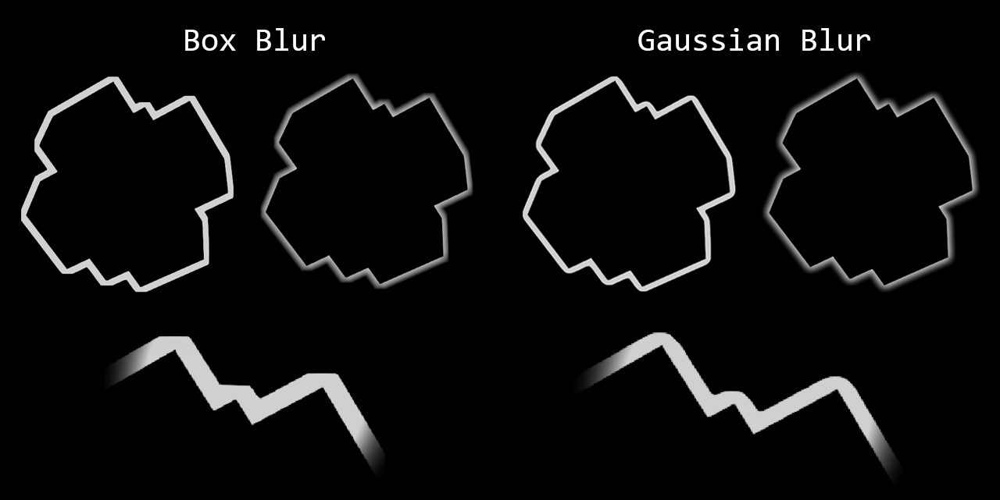
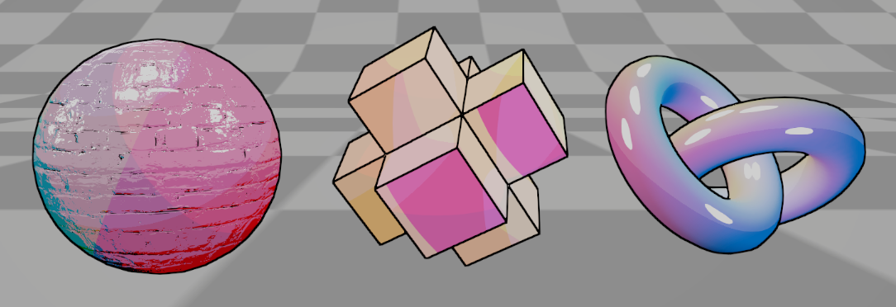
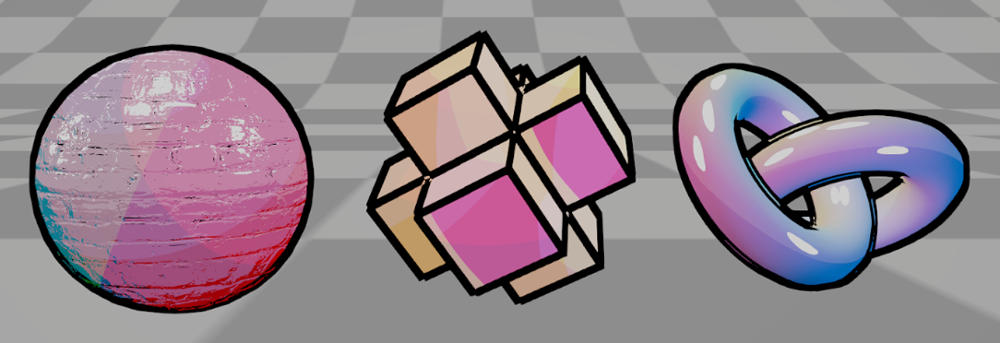
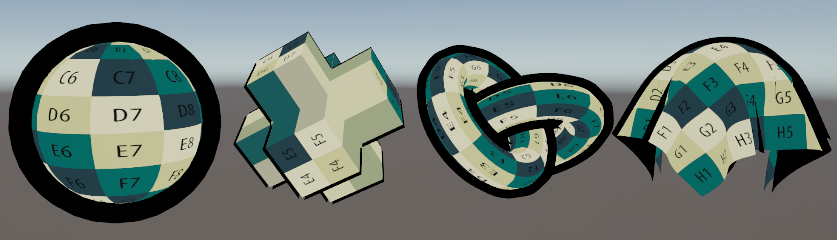

Blur Outline에서는 box blur와 gaussian blur를 활용하여 두 가지 방식으로 구현해 보았다. 두꺼운 아웃라인의 경우 확연히 차이가 나는데 gaussian 방식의 경우 확실히 더 자연스러운 blur를 만들어낸다. 하지만 두께를 넓히기에는 결국 샘플링되는 수가 너무 크게 증가해서 사용하기 쉽지 않아보인다. 얇은 두께 1~5 정도면 사실 크게 체감이 될정도는 아니라서 box blur방식으로도 충분히 괜찮아 보였다.
이 방식의 한계는 오브젝트가 겹쳐있으면 오브젝트 개별적으로 아웃라인이 생성되지 않고 겹쳐진부분이 무시된 상태에서 아웃라인이 생성된다는 점이다. 오브젝트별로 랜덤한 id를 색으로 부여하면 이 문제를 해결할 수 있을 것같은데 아직 시도해보지 않았다.

Edge Detection Outline
Roberts Cross, Sobel을 활용하여 Edge Detection을 구현해보았다. 오브젝트 내부 및 노멀까지 적용 가능한 방식이다. 얇은 아웃라인인과 내부 아웃라인을 생성할때 가장 이상적인 방식이라고 생각된다. Roberts 방식과 sobel에는 거의 차이가 없어보이며 Sample이 더 적은 roberts cross 방식으로도 충분해 보인다. (아래는 Roberts Cross 예시)

두께가 두꺼워지면 쉽게 망가지는 것을 볼 수 있다.

Hull Outline
Hull Outline의 예시를 보면 부드러운 면은 비교적 잘 나오지만 고질적인 문제는 Hard Edge 부분에서 끊어진다는 점 그리고 두께가 없으면 아웃라인이 생성되지 않는다는 점이다. 이것에 대한 해결책을 한번 찾아봤지만 수식이 복잡해 그것을 구현하면서 까지 해결하는 것이 맞는가 싶다. 그래도 장점은 거리에 따른 두께변화를 쉽게 구현할 수 있다는 점이다.

Jump Flood Outline
WIP
△